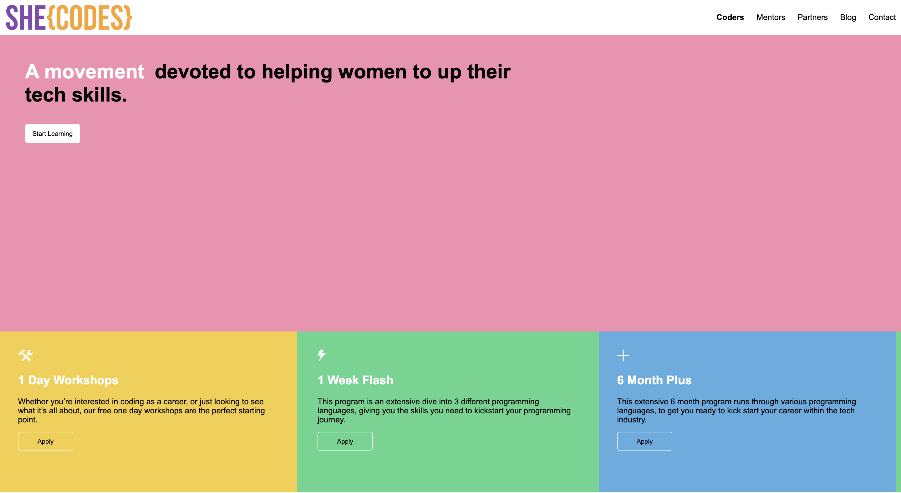
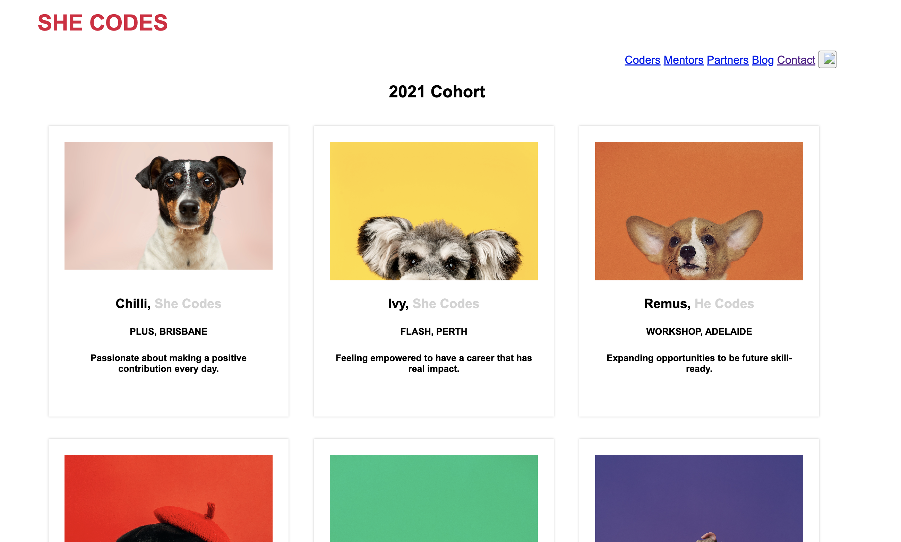

Project 1 | She Codes Workshop
This project was one of the introductory projects with She Codes
Australia.
This project allowed me to understand how code works to create the
output display that users see on a webpage.

Project 2 | She Codes Doggy Website
This was one of the first projects that I created with She Codes
Australia during our first week of learning the HTML and CSS logo.
The idea behind this project was to get the students familiar with
the format of HTML and CSS and how they work together to create a
webpage.
